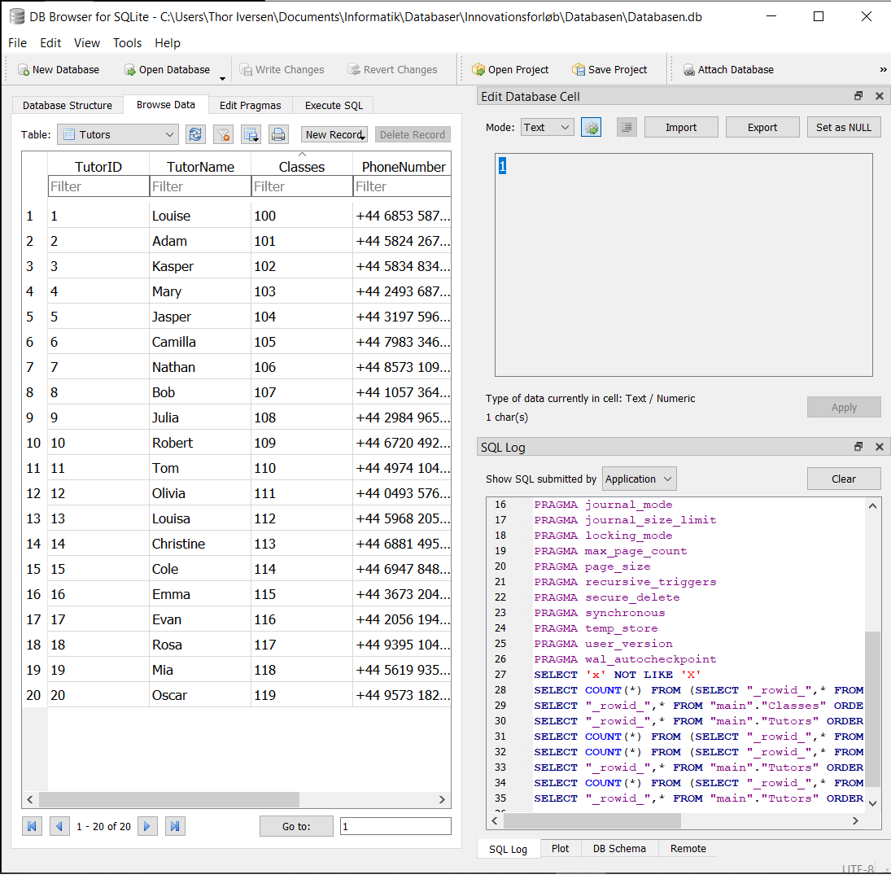

Det her forløb var en del af vores innovationsprojekt, som foregik i samarbejde med engelskfaget. I forløbet har vi lært om at håndtere større mængder data. Til det har vi blandt programmeret i programmet SQLite, hvilken er vist på billedet til højre -->
